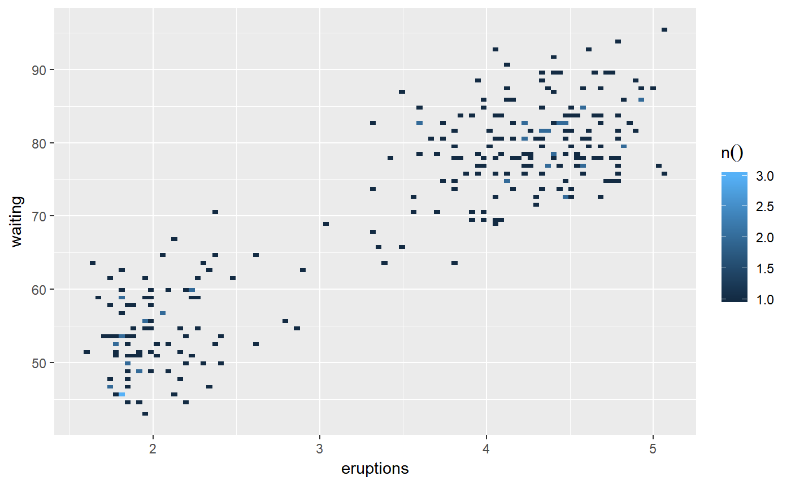
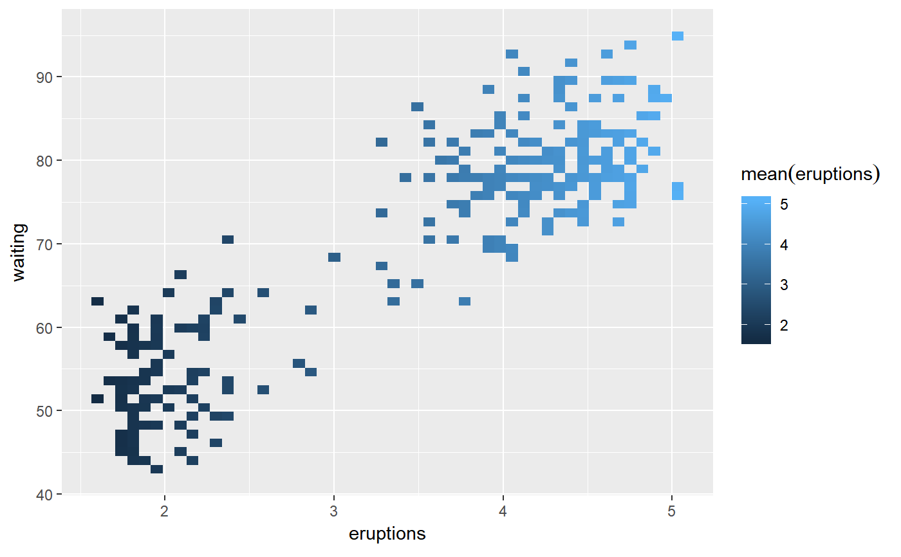

To visualize two continuous variables, we typically resort to a Scatter plot. However, this may not be practical when visualizing millions or billions of dots representing the intersections of the two variables. A Raster plot may be a better option, because it concentrates the intersections into squares that are easier to parse visually.
Uses very generic dplyr code to aggregate data and ggplot2 to create a raster plot. Because of this approach, the calculations automatically run inside the database if `data` has a database or sparklyr connection. The `class()` of such tables in R are: tbl_sql, tbl_dbi, tbl_spark
dbplot_raster(data, x, y, fill = n(), resolution = 100, complete = FALSE)
| data | A table (tbl) |
|---|---|
| x | A continuous variable |
| y | A continuous variable |
| fill | The aggregation formula. Defaults to count (n) |
| resolution | The number of bins created by variable. The highest the number, the more records can be potentially imported from the sourd |
| complete | Uses tidyr::complete to include empty bins. Inserts value of 0. |
There are two considerations when using a Raster plot with a database. Both considerations are related to the size of the results downloaded from the database:
- The number of bins requested: The higher the bins value is, the more data is downloaded from the database.
- How concentrated the data is: This refers to how many intersections return a value. The more intersections without a value, the less data is downloaded from the database.
library(ggplot2) library(dplyr) # Returns a 100x100 raster plot of record count of intersections of eruptions and waiting faithful %>% dbplot_raster(eruptions, waiting)# Returns a 50x50 raster plot of eruption averages of intersections of eruptions and waiting faithful %>% dbplot_raster(eruptions, waiting, fill = mean(eruptions), resolution = 50)